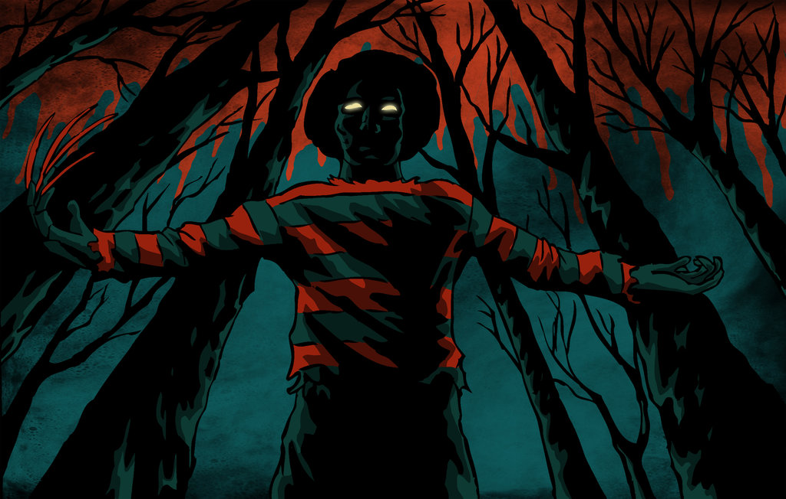

<ion-header>
  <ion-navbar>
    <button ion-button menuToggle>
      <ion-icon name="menu"></ion-icon>
    </button>
    <ion-title class="nav">Home</ion-title>
  </ion-navbar>
</ion-header>

<ion-content class="tout" padding>

  <h3 class="titre">Netflik</h3>

<ion-slides class="slid" pager>

  <ion-slide>
    
  </ion-slide>

  <ion-slide>
      
  </ion-slide>

  <ion-slide>
      
  </ion-slide>

</ion-slides>
  <br>
  <br>
      <button color="danger" ion-button round outline menuToggle>Menu</button>
      <button color="danger" ion-button round outline (click)="GoToListPage()">liste de Film</button>
  
</ion-content>


